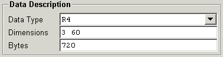

Data Description
This panel shows the type of data, dimensions and size of the data in bytes
associated with the selected node. Changing the data type and/or dimensions
will set the data properties when creating a new node, or modify the properties
for an existing node using the Create or Modify
buttons.

-
Data Type
-
This displays or sets the data type. The data type is selected from the
drop-down list invoked by clicking in the entry field or on the button
to the right. When changing data types, the Node
Data panel will be automatically cleared. This is done so that data
conversions will use the actual node data, rather than the data displayed
in the Node Data panel in order to reduce conversion
errors. The Read button may be used to reload
the data, if desired.
-
-
Dimensions
-
Displays the dimension for the current node. Editing this will change the
dimensions of the data for the node. If this field is empty when the Create
or Modify button is pressed, the dimension will
be determined from the data type and data values in the Node
Data panel. This is the recommended procedure when creating new data
for the node.
-
-
Bytes
-
This shows the size in bytes for the data associated with the current node.
This field is shown for reference only, and is not editable.
[previous] [index][next]